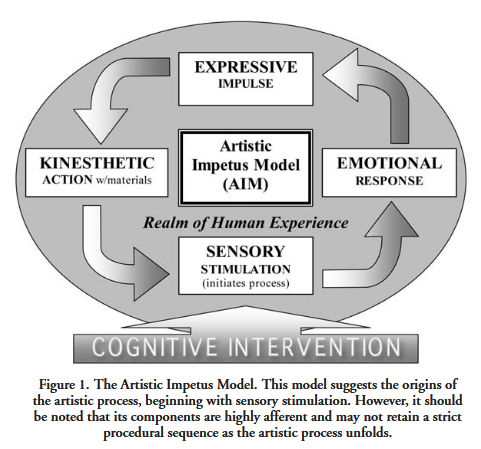

Creative software has heavily professionalised over the past decades. Many of their quirky and playfully pointless features have been
filed down to a business-casual version of themselves
The History of Microsoft WordArt
, while the more out-there programs
failed to stand the test of time in capitalist for-profit contexts
EOL Adobe Flash Shockwave Player
. Even in game-making-for-kids software like Roblox, capitalistic motivations are made to loom over the creative processes of children; users are motivated to create games not only for personal expression, but for monetary gain. Creation in Roblox is the optimal method of extracting the much-desired in-game currency 'robux' from other players/users/children.
Meanwhile, in the indie sphere, there has been a surge in art-toys: explicitly playful creative tools.
Electric Zine Maker
An endlessly playful program for making various zines, featuring tools such as an 'egg brush', 'the smoosh zone', and a 'color factory'!
Link
,
Wigglypaint
A wonderfully imprecise drawing program, made in Decker!
Link
, and
Decker
An incredible 'interactive document' creator inspired by HyperCard; Apple's sort-of-Flash before Flash.
Link
are all examples of un-professional, playful, artistic software, which's primary purposes are to be explored and used to create, rather than generate shareholder value. They intrinsically counteract profit-driven motivations by adopting artist-first values and principles.
How did we end up with such a strong discrepancy between the professional and artistic realms of digital art-making?
What is and can be done to counteract this you-can-earn-cash-off-your-passion-be-a-grindsetter ideology?
How can you make room for beginners to actually begin, learn, explore, and experiment, without the intrusive, perverse eye of commerce?
What can be learned from the litany of pre-existing artistic movements who's aims are to experiment and transgress?
What the fuck is vibe coding?
Chapter 1 -- Artistic Development and Teaching Expression
// CORE HYPOTHESIS: Playful exploration is imperative in artistic development, and most programs used in digital art creation do not provide this.
For what was probably the entirety of my childhood my dad had attempted to get me to care about programming. The bits and pieces I remember from this time consisted of me getting bored of Scratch and my dad quietly cursing trying to figure out Construct (or Flash, I'm not sure). Looking back I believe the major reason as to why these didn't grab me at the time is because they weren't borne out of my own interest, I was sat behind a computer to go do assignments in Scratch. Eventually I did want to make a Sonic fangame like Sonic RPG or Final Fantasy Sonic X, but this was too complex for me or my dad; it was, regrettably, quietly abandoned.
A major reason as to why I even wound up pursuing game design was due to an eventual love for world-building and collaborative, interactive storytelling; specifically in the context of Tabletop Role-Playing Games. This fascination was planted when a high school friend introduced me to Dungeons & Dragons and soon after I was hooked. I wrote pages upon pages of quests, characters, game mechanics, noble families, flora, fauna, and legendary magical artifacts.
This led me to pursue game design, where I slowly but surely became a lot more cynical about the creative process. This transformation was in large part intended and guided by the curriculum; things had to be deemed marketable, profitable, and/or in-taste (visual novels were notoriously derided by the majority of the faculty) to be rewarded with a passing grade or affirmations from classmates, tutors and lecturers. This approach soon led me to burning out, after which I had to relearn how to make games for the simple sake of making them.
This chapter is an investigation into this loss of passion for my own makership, looked at through the lens of tools. What qualities are important in the tools we use to develop ourselves artistically? What else is necessary for artistic development to take place? How do my own tools compare to these important qualities?
Defining Artistic Development
Before we take a look at a tool's qualities we'll need to define what it means to artistically develop oneself. In Creative and Mental Growth
(Lowenfeld, 1965)
Lowenfeld, V. and Lambert Brittain, W. (1965) Creative and mental growth - Fourth Edition, The Macmillan Company
it is argued that children, on the average, go through six discreet stages of artistic development. None are skipped or accelerated, and although there's some variability in how quickly children go through these stages they generally remain on par with one another. This growth is guided by contemporary schooling, which provides students with the necessary tools, time, and environment to practice their creative skills.
In regards to tools these stages differ greatly. At the youngest ages (2-4) safety and technical difficulties are a concern, so sharp pencils, watercolors, and cutting tools are discouraged in favour of safer and more permissive crayons, felt pens, and chalks.
With the years more and more tools enter the child's repertoire, allowing them time to grow accustomed with the new and find their own means of expression through their use.
Generally, throughout these stages it is also advised to avoid tools and materials that are gimmicky, and/or provide instantaneous results (drip-painting, pasting cereals, colouring sheets, pre-cut stencils), as these can do little for the developing child but make them feel inadequate and reduce their confidence in their own means of expression (Lowenfeld, 1965, p.130).
This last point of recommendation proves timeless in our current age with the emergence of generative AI models, which's impact on (children's) (creative) development and learning is the current-day subject of informed guesswork
(Nikolopoulou, 2025; Kanders et al., 2024),
Nikolopoulou, K. (2025) Child-centered integration of generative AI in early learning: balancing promises and challenges. AI Brain Child 1, 21 https://doi.org/10.1007/s44436-025-00023-1
Kanders, K., Stupple-Harris, L., Smith, L., & Gibson, J.L. (2024) Perspectives on the impact of generative AI on early-childhood development and education. Infant and Child Development, 33(4), e2514. https://doi.org/10.1002/icd.2514
careful consideration
(Shen, 2026),
Shen, J.H. and Tamkin, A. (2026) How AI Impacts Skill Formation, arXiv:2601.20245
and heavy skepticism
(Guest et al., 2025).
Guest, O. (2025) Against the Uncritical Adoption of 'AI' Technologies in Academia, Zenodo, doi:10.5281/zenodo.17065099
What does artistic development look like for adolescents and adults, however? Compared to younger children, in addition to practicing technical prowess this development is a lot more 'heady'. As identified in The Artistic Impetus Model
(Amorino, 2009)
Amorino, J.S. (2009) 'The Artistic Impetus Model: A Resource for Reawakening Artistic Expression in Adolescents' in Studies in Art Education Vol. 50, No. 3
the concerns of an adolescent become a lot more difficult to identify and depict as they grow into adulthood; artmaking can provide an understanding of their
'inner reality',
As defined in The Artistic Impetus Model (p.226):
"The adolescent's "inner reality" refers to the abstract, philosophical, and reflective concerns which permeate their world and influence their artmaking, in contrast to the more literal “reality” of outward activities generally depicted in children's artwork."
making it comprehendible, accessible, and explorable given that they are provided with the necessary tools and structure.
To conclude, artistic development seems to be an intermingling of close guidance and a freedom to create. A critical eye is cast on everything that enters this process, especially the tools. The provided guidance does not take an exemplar character (showing how it's done), but rather an assisting one that introduces and can be called on reliably in order to grow and maintain the learning artist's artistic courage and confidence.
Tools and Artistic Development
Jumping off from this now-a-bit-more defined artistic development, what tool-characteristics are valuable in terms of artistic development? I already spoke of how gimmicky, instantaneous tools are deemed of little developmental value, as are the mass-produced stereotypes of holidays and seasonal events (Lowenfeld, 1965, p.129). Perhaps for our purposes it is better to observe the traits of tools that are an effective means of artistic development, which might further enlighten us as to what our tools, or the tools of the future, should hold.
In Steering the Craft, the author opens with her view on vocabulary and grammar as writer's tools, how they are only half-understood or wholly unfamiliar to many, and how fundamental it is to the practice of writing. How else can you review a sentence and see what is right or wrong
(Le Guin, 2024, p.10)?
Le Guin, U.K. (2024) Steering the Craft, Silver Press
She invokes the example of a carpenter not knowing the difference from a hammer to a screwdriver, which can easily be transposed to the tools used in other crafts; from sculpting (loop tools, dental tools) to makeup (crease brush, powder brush). Tools like these have a history to them, taking form over decades/centuries/millenia to hone in on what makes them useful in their respective medium. Paintbrushes experienced a sort of renaissance thanks to the invention of the metal ferrule, for instance. Hairs used to be bound to the handle by hand and wire, which made the wood underneath extremely susceptible to moisture and rot. The metal ferrule provided structure and protection from the elements, granting brushes longevity and a vast, novel array of possibilities in shape and size
(Katlan, 1999).
Katlan, A. (1999) The American Artist's Tools and Materials for On-Site Oil Sketching in Journal of the American Institute for Conservation Vol. 38, No. 1, pp. 21-32
These evolutions in tools and toolmaking are often linked to an artist's development. For example, Mark Rothko's toolbelt is arguably the core of his late period. His layering, brushstrokes, and formulations were imperative to achieve the sense of depth his paintings needed, in his pursuit of mythology and optical intrigue
(Breslin, 1993).
Breslin, J.E.B. (1993) Mark Rothko: A Biography, University of Chicago Press
Something special about garnering a fluency in tools, is that you achieve the level of understanding necessary where you can start to break these tools down; their imposed and implied rules can be molten away to reveal their true modularity. However, "a blunder is not a revoltion". Going back to Le Guin with this quote, she writes on "fake rules"; principles that are as inexplicable as they are common. An example of one such rule is the barring of "there is" as the start of a sentence, because of a misguided belief that it's passive tense, and that good writers never write passive tense (Le Guin, 2024, p.26). Rules like these are easy to break, as their foundation consists of either nothing or nonsense. Breaking real rules however, requires intentionality. A beginner might underload her brush from a lack of experiential reference, but someone with a growing sense of confidence might do the exact same to introduce texture and visual noise into her strokes.
Putting these observations about artistic development into our back pocket it's time to specify some more, specifically in the direction of guidance; we will be investigating the importance of mentors and structure in artistic development and tool-learning.
Tools and Guidance
In this exploration of tools' relation to artistic development, it's easy to forget the importance of guidance.
The Artistic Impetus Model

From The Artistic Impetus Model: A Resource for Reawakening Artistic Expression in Adolescents (Amorino, 2009, p.219)
(AIM), both as a paper and a model, is a great example of this; the students' artistic development would've been unlikely without the course's interference.
Various artists and theorists have described artmaking as a cyclical process, which provided further basis of the AIM; Klee
(1920),
Klee, P. (1920) Creative Credo, Tribüne der Kunst und Zeit
Dewey
(1934),
Dewey, J. (1934) Art As Experience, Perigee Books
and Read
(1960)
Read, H. (1934) The Forms of Things Unknown, Faber and Faber
all point towards a cyclical balance between doing and undergoing. They share similar ideas while using different terms (Klee's movement, Dewey's experience and expression, Read's creative process and created form) to describe this ebb and flow of artistic practice, all too familiar to those tuned into their environment and ready to draw their inspiration from it.
The model also hinges on sensory stimulation as a jumping-off point, where students explore objects or memories with the use of their five senses. The author argues that this sensory stimulation, and the resulting emotional response, are necessary components to artistic expression (p.216-218).
I see this reflected in not only my own practice, but the works of uncountable artists and artistic movements. One such example being the impressionists of the 19th century, painting subjects rich in whirling movement and vivid colour, to capture the moment as they experience it
(Bomford et al., 1991).
Bomford, D., Kirby, J., Leighton, J., Roy, A. (1991) Impressionism: Art in the Making, The National Gallery of London
Alternatively one can look at how pervasively an artist's own life is used as a source of inspiration. Whether it be their
childhood memories,
In an interview with David Sheff for his book Game Over: Press Start to Continue: The Maturing of Mario (1999), Shigeru Miyamoto recounts how his childhood experiences inspired the conception of The Legend of Zelda:
"When I was a child, I went hiking and found a lake,” he says. “It was quite a surprise for me to stumble upon it. When I traveled around the country without a map, trying to find my way, stumbling on amazing things as I went, I realized how it felt to go on an adventure like this."
past loves,
The George Miles cycle is a series of five novels written by Dennis Cooper.
Its namesake comes from the author's childhood friend and eventual lover, and the cycle itself was written to express, explore, and attempt to further understand his fascination with sex and violence, and his feelings for Miles.
Link
or communities;
Spike Lee's Do The Right Thing was inspired by a racist attack and the time's racial relations as a whole, as he saw it growing up in Brooklyn, New York. Link
life experiences, and reflection upon them, shape what artists make and how they make it.
The reflection aspect therein is perhaps the most important, and where the budding artist most benefits from guidance. This process might feel exposing, or shameful, or simply too big to tackle with a limited skillset; how many students are forced to draw a self portrait during their adolescence, a period where the self is a volatile and nascent thing?
I remember having to draw myself in middle-, high-, and art school. For each and every one I felt too insecure in both my abilities and personhood to sufficiently reflect on myself, or to even know what to capture.
Here is where I believe guidance can assist the most; the relatively simple egging on, setting sensible goals, being kind and emphatic to the challenges of adolescence. If we want kids to make art they need to be given the safety and confidence to make their art speak, and we need to be willing to listen to what it says.
A Reflection on Digital Tools
So how do digital tools fit into this pedagogical framework for artistic development? At the time of writing Creative and Mental Growth, computers and their programs were not yet a factor, but we can see bridges form between its words and contemporary creative software. To quote an article on King's Field in issue 61 of Electronic Gaming Monthly Magazine, written by Chris Johnston
(1994, p.56),
Link
The PlayStation can produce mind-boggling effects. However, are the tools and processes necessary to produce these these mind-boggling effects engaging enough to be of value to someone's artistic development?
In Mindstorms (Papert, 1980), the author argues for an educational relationship between children and computers where, instead of the computer programming the child, the child adopts a more active and self-directed approach with the computer; learning how it works by learning to 'speak computer' (p. 19-21), so they might grow capable of writing their own programs and get the full use out of these devices. At the core of his thesis lies the educational programming language Logo and its turtle graphics feature. In this tool learners can, by way of puzzles and immediate feedback, grow accustomed to the fundamentals of computational thinking (code flow, functions, variables).
It's notable that this book casts programming as a visual (artistic?) endeavour. Much like how painting and drawing trains our fine motor functions, the process of writing, testing, and rewriting code trains us in handling a computer; both in a bodily sense as a deeper, understanding sense. We don't just learn how to use a mouse and keyboard (preferably) with our hands and fingers, we learn how to 'speak computer'.
Much like any artistic process, the processes of predominantly digital artists are endlessly varied. Still though, analogue materials do enter these processes quite often, especially in the beginning stages of a project. Considering my own background in game design and development, pen & paper prototypes are and have been considered a fundamental testing method (Adams, 2013; Schell, 2008; Saffer, 2009); from UI layouts and UX to game mechanics or spatial layouts, they let designers fantasize before putting anything to code.
In part this is done because of the need or desire for quickness. Anything digital tends to get bogged down by booting, setup, building, rendering, et cetera. With pen & paper you can immediately start sketching, folding, and cutting. These prototypes also aren't so precious as even a roughly blocked out level, they can easily be modified or tossed entirely without much emotional baggage.
This doesn't mean that there are no easy, iterative, digital tools of course. Unity's whiteboxing tool ProBuilder and capacity for runtime editing are great examples of tools for digital prototyping, but still suffer from being limited to one specific program you may not want to develop for.
So what of the digital tools this initial, iterative process feeds into? DAWs, IDEs, game engines, raster and vector graphic editors; each category of software contains a multitude of programs that are FOSS or OSS or closed source or some secret, other license. Point is, the realm of creative software is vast and full of parties with vastly different reasons for being in it. Some software exists for the love of the game, others have won themselves a level of widespread adoption to a point where they can profit-motive the fuck out of their software-repertoire.
Where analogue art tools don't suffer as much from this corporatized interest in their tools and materials, digital tools do so massively. DRM has opened the doors to various temporal payment models (monthly, yearly... weekly?), often predatory, designed with enterprises in mind rather than individual artists. Ultimately, what DRM means is "this tool is not yours". It will never truly be yours to have, keep, and modify. The effect this has had on artistic practice is vast, for example when looking at the relatively recent development of 'art as content'.
Content, in the context of social media consumption, is a broad term to describe practically anything that can be found on the internet. Content is 250-word-limit text posts, manosphere podcasts, the most beautiful painting you've ever seen, and movie-length video essays about the worst movies you've never seen. In a lot of ways it's the complete flattening of cultural artefacts, where it all exists on a similar level of accessibility. This is also where the term 'viral' sprung from, incantated when a piece or collection of content gains infectious, mass-visibility through a mixture of genuine interest and algorithmic luck.
'Going viral' has grown to become the goal for many independent artists trying to garner self-sufficiency and success online, which can inform their art. Platforms like instagram or Youtube have periods of time where a certain style (edgelord commentary), technique (fluid painting), or theme (relatable 4-panel comics) enjoys an increase in exposure and popularity, in turn shaping the decision-making of those virality-wishing artists on what they should prioritize in their work.
It's an incredibly freeing thought, that anyone is able to publish their work to a level where anyone with an internet connection could see it; but the emphasis is placed on 'could' here.
So what do artists, more broadly put: software users, do to take back control of their digital practice?
They mod the tools which, as they've grown comfortable in them, turn out to be cramped in some regards. Adobe's Exchange, Godot's Library, Blender's Extensions; DAWs arguably are built to house plugins. Whether they allow modification of the software itself is more variable. FOSS allows it implicitly, whereas something like FL Studio rather remains untouched, functioning moreso as an unchanging house for plugins to take residence inside of given rooms.
Even browsers, our primary way of interfacing with the internet (wrapper apps don't count), offer plugins in the form of extensions or bookmarklets.
They pirate, which some might call steal, the software they have been using or want to use. In some instances it's not so much analogous to someone shoplifting a painting set, but rather someone not returning the painting set they've been renting for years. Cracking DRM has been a hobby for as long as DRM has been a thing, and much like grafitti both the showcase of technical prowess and the illegality of it are the primary ingredients to its thrill.
They make their own software, which will be expanded on more in chapter 3. This software often reflects their values, both as a software designer and beliefs-having person. GNU, stated to be a "technical means to a social end", reflects the views of its creators deeply. It's free, open to look inside of and modify, and spawned a long lineage of other free software based on its philosophy.
In the following chapter we will examine some more cases of 'practice reclamation'; artistic practices where tools are made, modified, and stolen for a variety of (un)ideological reasons.
“Are Games Art?” And Other Exhausting Turns Of Phrase
Perhaps thanks to the field's adolescence and late-stage-capitalist birthing ground, games are and have been evaluated primarily by their viability as a commercial product, rather than a cultural one. Making a game can be a terribly expensive affair, so the involvement of money isn't entirely surprising, but a medium like film—equally multidisciplinary, relatively modern, commercialised to hell and back—does not suffer nearly the same amount of scrutiny on whether it is or isn't art.
This has led to an underlying sense of shame and shyness in many game-making spheres, where debates and discussions around whether we are allowed to call ourselves artists and our works art have grown trite.
This prioritisation of games as products has gravely affected the ways game-making is taught and how games are made; the process of making a game is devalued in favour of the shortest route to a commercially viable final artefact on digital shelves. This is reflected in education by the placed priority on learning and using established tools, irregardless of their
questionable business practices
Unity signs "multi-million dollar" contract to help U.S. government with defense
At the tail-end of July 2025, the digital store front Itch.io
deindexed
Deindexed—“A state where a project is removed from all public discovery channels on itch.io. A deindexed page will not appear in search results, browse pages, or recommendations. However, the page is otherwise fully functional, and will appear normally in collections, libraries, and profile pages. Access to files included on the page are not restricted in any way.”
Source
all content marked adult
due to pressures from payment processors.
Itch.io's recent update on NSFW content
Albeit a temporary deindexation, it still sparked a lot of unrest among the various indie artist spaces I was or am active in, and led to a loss of income for queer game developers. It led to artists making their own websites on Neocities,
exploring self-hosting solutions
Mala's guide to self hosting
, and a growing sense of solidarity between impacted artists. Namely those who create digital works with mature, queer, and/or pornographic appeal.
Since then, one other high-profile case took place where the game Horses, by established, award-winning indie game studio Santa Ragione, was pulled from Steam and Epic Games Store for
'violation of content guidelines'.
Statement from Santa Ragione around Horses' ban
Playing it myself I was surprised to find a straight-forward critique of Italian authoritarianism, and its supposedly ban-worthly nudity and (sexual) violence to be little more than goofy and cartoonish.
It wears its inspiration on its sleeve; the closeup snapshot editing, silent film format and intertitles echo surrealist cinema of the 1920s. More specifically Luis Buñuel's Un Chien Andalou, which, unlike Horses, was allowed to be screened freely during its time and
was received positively despite (because of?) its shocking content.
Roger Ebert's review of Un Chien Andalou (2000)
It seems to be a sort of trial by fire every artistic medium goes through. Whether it's the
Hays Code
The Hays Code, or Motion Picture Production Code of 1930, was a set of principles which films were required to adhere to if they wished to be played in American theaters, until its abandonment in the mid-60s. For example, it forbade the use of profanity, obscenity, racial slurs, and the proscription of criminality, homosexuality, and interracial relationships.
Britannica article on the Hays Code
or the
Salon de Paris,
The official art exhibition of 18th century France. Its conservative selection procedures and France's ever-shifting political landscape led to offshoots such as Salon des Refusés and Salon des Indépendants.
The Paris Salon: How It Shaped the Art World— and Your Gallery Wall
art is seen and treated as a vehicle for infectious values and morals. However, that doesn't seem to be what's going on in games.
I believe the answer lies in the specific way these digital store fronts closed the door on Horses; it was in violation of their 'content guidelines'; a set of rules that is shrouded in thick legalese. These guidelines aren't stipulated for moral reasons but rather legal ones, most importantly regarding the mandates from payment processors like MasterCard, Visa, and PayPal. Activist organisations like Collective Shout do take a moral ground, and do what they can to pressure these payment processors to
tighten rules on adult content.
Why did thousands of adult titles just disappear from the biggest PC gaming marketplaces? (The Guardian)
So do terms and conditions like these influence the manner in which game developers teach, learn, and make games? I'd argue it's unavoidable. Making games is an expensive, time-consuming, and risky ordeal. A game like Consume Me can be nominated for and win a litany of high-profile awards, including the prestigious Seamus McNally grand prize at IGF, and still
only sell an estimated ~7.800 units over 3 months.
Steam statistics for the game Consume Me. Estimations are made based on a number of factors, including the game's number of reviews.
This is perfectly fine of course, making art is about the process and the commerce generated by the final artefact does not reflect its value, but at the end of the day you have to eat and make rent to keep making art.
This leads into trend chasing, which has had a well-discussed and well-established presence in game development. Whether it's pixel-art rogue-likes/lites, metroidvanias, hero shooters, MOBAs, 'friendslop', or games as a service (GaaS), something wildly new tends to trigger a cascade of similar releases hoping to bank on or reinvent their popularity.
An apt example can be found in the 'hero shooter' genre. On release in 2016, there was very little like Overwatch. It gave name to a subgenre that was only vaguely defined by games like Team Fortress 2; multiplayer games featuring a strongly characterised class roster with unique abilities. 4 years after this wildly successful release,
hero shooters really started piling onto Steam en-masse.
SteamDB monthly and yearly charts of game releases tagged with 'hero shooter'
Considering the average dev cycle for a contemporary video game is
~4 years,
How Long It Takes To Develop A Video Game
it can be argued that these releases were brought forth primarily by the prior release of Overwatch.
I found this to be reflected in my bachelor's curriculum as well. There was a strong focus on case studies through the lens of a game's commercial success or failure, rather than its design or narrative. Even if I found many of the design choices behind that period's open world games questionable at best (The Witcher 3: Wild Hunt, The Legend of Zelda: Breath of the Wild, Horizon Zero Dawn), they kept insisting on themselves and their value through presentations, case studies, and the ever-looming fact that
they all sold millions of copies.
Witcher 3: 60 million copies (May 28, 2025) Zelda BoTW: 33.34 million copies (September 30, 2025) Horizon Zero Dawn: 32.7 Million copies (April 16, 2023)
I felt a strong push to work towards making games like these, even if I found them uninteresting or mediocre. The definition of success felt like it was tied to your own proximity to the AAA games industry, and as such I focused much of my practice on
level design,
FPS Level Design Tests (November 20, 2020)
marketability,
Fishy! Friends! (June 19, 2021)
and
'juice',
When The Vengeful Spirit Rode (June 4, 2021)
anything to get me a chance at an internship at a major studio, even if it made me feel like a stagnant pool of brackish water.
Amid this feeling I did light up at the prospect of telling stories, like the
{ROM.IO && JUL-AI};
itch.io link
project which was developed for an interactive narrative course. Here we made videogame remixes of the classic Romeo and Juliet tragedy, and ours failed and burned to the ground tremendously. It doesn't even run properly; to show the full game I had to stitch together a video of the various scenes, shot inside of the Unity editor, to showcase the story we aimed to tell. Regardless of this 'failure', it was the most fun I'd ever had making a digital game, and from this point forward my games took a strong, admittedly indulgent, narrative turn.
I grew more and more convinced of games as narrative vehicles during the development of
ONEIRO(PHOBIA/PHRENIA).
itch.io link
What originally started as a quick project to make up for a failed course grew into a safe space for me to offload my personal dreams and nightmares. I allowed game-making to become a therapeutic, multi-media process that benefitted me and my well-being. Not to mention the numerous things I learned during its development; I designed
posters,
made
fake product packaging,
produced
music,
Chittering Teeth
Incantations of Dread
and felt self-motivated the entire way through. Turns out that having fun when learning new things helps you learn more, faster, with less risk of burnout!
Who knew?
Basically everyone...
Teaching Computer
In Mindstorms
(Papert, 1980)
Papert, S. (1980) Mindstorms: Children, Computers, and Powerful Ideas, Basic Books, Inc.
the author speaks of most contemporary educational institutions using computers in ways where, rather than the child programming the computer, the computer programs the child. Even today, and in my personal high school experience, computers were and are primarily used to dispense information. Coding wasn't even an elective, and the single 'informatica' class we got was so horribly outdated that the teacher taught us how to move a computer mouse; forward and backward instead of up and down.
It has gotten quite a bit better by now. Teaching yourself how to code has never been easier, and tools like
Scratch
A block-based learning tool for computer logic.
are purpose-built to teach computer logic to children through playful means.
Chapter 2 -- Lessons From Punks, Scum, Freaks, and Other Transgressors
I have a complicated relationship with professionalism, it has always been exceedingly difficult to adopt and felt weird when applied in my creative processes. This, by extension, has also made the relationship between me and my professional-grade tools tenuous. My growing desire for ownership over them was not compatible with my toolbelt at the time; most if not all of them were closed source, so ever since I've felt a need to either break or exchange them.
It made me wonder; how did the artists of the past go about this tool reclamation? Was it even a concern, or is this purely a modern-day problem brought on by DRM and closed source software? How do the digital artists and artistic movements of today claim artistic self-sufficiency, and does this wind up shaping their practice?
A History of the Means of Artmaking
Historically and across artistic mediums, the means of artmaking have entered, exited, reentered, and reexited the direct possession of artists. Patronage, meaning the financial backing of the arts and artists, has been a major factor as to how artists have been able to practice their work. This now includes both the direct commissioning of artwork as mass-audiences and mass-consumption through the more public-oriented systems of museums, cinemas, venues, and (online) publishing (Kent et al., 1987; Brown, 1993).
Before this massive accessibility of the arts, non-commissioned art was a rarity (Starr, 2017). Reasons for engaging in this sponsorship varied greatly; some works might be made to endorse political ambitions, to (re)write history, or for simple prestige. Making art for one's own expression or an audience outside of the wealthy royal, imperial, or aristocratic class only reentered commonality together with industrialization and the rising power and influence of a bourgeois class.
What this meant for the arts and artists was a necessity to paint, sculpt, and compose to the tastes of their patrons. Despite this subservience, master artists did tend to enjoy a great level of control over their tools and process. They were moreso valued for their artistic skill rather than their artistic voice, so their choice of tools remained their own. These were also largely made by themselves; pigments were ground by apprentices and paints were formulated in the atelier, chalks were made from different stones and clays, and brushes were both bought and made by the artist (Harley, 1972, p. 123–126).
This tool-ownership began to be greatly complicated with the introduction of digital tools like Photoshop. At first these were generally closed-source programs on a disk that needed to be bought just once. With technological developments however, the first, previously mentioned DRM measures started popping up (like one-time activation codes and server-based authentication methods) to ensure that people couldn't share or resell their copy of the software. This now means that these programs have become near-impossible to legally acquire, now that most of these codes have been used and servers have since been taken offline.
Now that major digital art tools have moved on to cloud-based subscription models, where access to the software needs to be continuously paid for, art tool ownership has become a lot less self-evident than it was when art tools purely were things you could hold and make yourself. However, how unreasonable is making your own digital tools now that software development knowledge has become much more accessible?
Very unreasonable as it turns out, due to a multitude of factors. For example, making your own game engine has become a bit of a meme in game development circles. There's numerous video series online of developers suffering through the process of building their games "from scratch", meaning without the use of preexisting game engines like Unity, Unreal, or Godot. Widely adopted and open libraries (like SDL or OpenGL) are commonly used to cover the fundamentals of real-time rendering or inputs, but the process remains highly complex and technical; the same applies to any software that requires a low-level programming ability. It comes down to whether the huge time investment is considered to be worth it, and especially in a capitalist, productivity-oriented context it rarely is.
Even in contemporary art education, digital tool development is typically considered outside of the course's scope. Instead the focus is placed on teaching industry standard software so the student can seamlessly fit into a workplace's pipeline. This seems to run contrary to artistic practice, where an artist is encouraged to closely regard and question everything around them. Why should their tools be exempt?
In the following sections we will be investigating artists and artistic movements that do question their digital and electronic tools, the foundations of their medium, and the role of art in an age of digital and mechanical reproduction.
This desire for efficiency is reflected in the tools we use to develop software;
IDEs
Integrated Development Environments, like VSCodium or Rider, are code-writing programs that support one or various programming languages. They often offer productivity-oriented features like autocomplete or the coding equivalent of spell-check.
are purpose built to make the act of writing code more efficient and coders more productive. Some digital artists have started to actively wonder how much of this is necessary to the things they make, and if it might be detrimental to their making processes.
In this chapter we will be looking at a few of these tools and toolmakers, from now on referred to as Art-Toys, to further hone in on how artists are reclaiming their digital artistic practice and enabling others who desire a similar level of control over their tools.
Electric Zine Maker
playful creative software //
Decker
a tool for making tools //
Fantasy Consoles
creativity from restrictions //
Reference List
Lowenfeld, V. and Lambert Brittain, W. (1965) Creative and mental growth - Fourth Edition, The Macmillan Company
Nikolopoulou, K. (2025) Child-centered integration of generative AI in early learning: balancing promises and challenges. AI Brain Child 1, 21 https://doi.org/10.1007/s44436-025-00023-1
Kanders, K., Stupple-Harris, L., Smith, L., & Gibson, J.L. (2024) Perspectives on the impact of generative AI on early-childhood development and education. Infant and Child Development, 33(4), e2514. https://doi.org/10.1002/icd.2514
Shen, J.H. and Tamkin, A. (2026) How AI Impacts Skill Formation, arXiv:2601.20245
Guest, O. (2025) Against the Uncritical Adoption of 'AI' Technologies in Academia, Zenodo, doi:10.5281/zenodo.17065099
Amorino, J.S. (2009) 'The Artistic Impetus Model: A Resource for Reawakening Artistic Expression in Adolescents' in Studies in Art Education Vol. 50, No. 3
Le Guin, U.K. (2024) Steering the Craft, Silver Press
Katlan, A. (1999) The American Artist's Tools and Materials for On-Site Oil Sketching in Journal of the American Institute for Conservation Vol. 38, No. 1, pp. 21-32
Breslin, J.E.B. (1993) Mark Rothko: A Biography, University of Chicago Press
Klee, P. (1920) Creative Credo, Tribüne der Kunst und Zeit
Dewey, J. (1934) Art As Experience, Perigee Books
Read, H. (1934) The Forms of Things Unknown, Faber and Faber
Bomford, D., Kirby, J., Leighton, J., Roy, A. (1991) Impressionism: Art in the Making, The National Gallery of London
Johnston, C. (1994) 'Press Start' in Electronic Gaming Monthly issue #61, pp. 50-60
Papert, S. (1980) Mindstorms: Children, Computers, and Powerful Ideas, Basic Books, Inc.
Schell, J. (2008) The Art of Game Design: A Book of Lenses, FOCP
Adams, E. (2013) Fundamentals of Game Design, Third Edition, Prentice Hall
Saffer, D. (2009) Designing For Interaction: Creating Innovative Applications and Devices, Second Edition, New Riders Publishing
Kent, F.W. et al. (1987) Patronage, Art, and Society in Renaissance Italy, Oxford University Press
Brown, C.C. (1993) Patronage, Politics, and Literary traditions in England, 1558-1658, Wayne State University Press
Harley, R. (1972) “Artists' Brushes—Historical evidence from the sixteenth to the nineteenth century,” IIC Lisbon Congress, Conservation of Paintings and the Graphic Arts
Glossary
Term
Working Definition
Scratch
A learning platform aimed at children, using blocks and game-making to explain fundamental programming concepts.
Construct
A low-complexity game engine typically for 2D games; relatively easy to learn because of its visual scripting system.